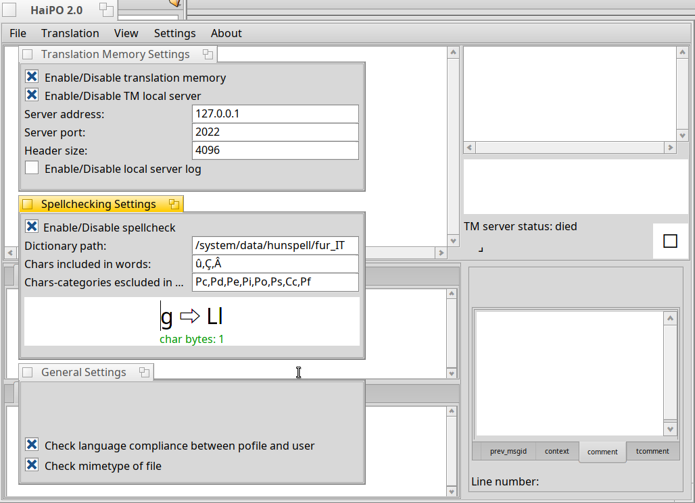
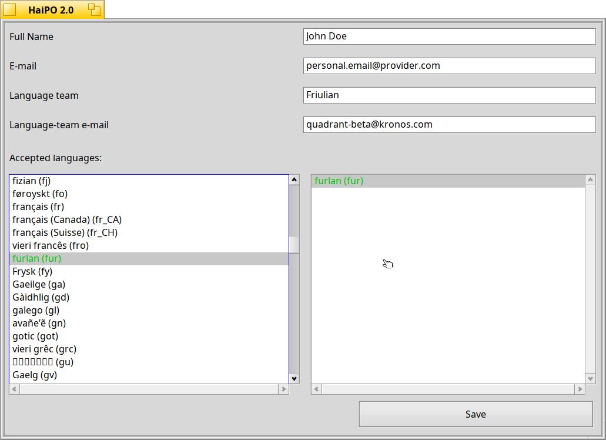

Topics
Interface in depth
Interface details and user guide
String List colors: When you load a po file their entries will be loaded in the top left list view. Every entry is displayed with its source string (the string in original language) and can be either a translated entry, an untranslated one, an obsolete one or a fuzzy one. The translated strings are written in black, the untranslated in blue, the obsolete in brown, and the fuzzy ones are ocher/yellow. You can see an example below:

String List elements: In the above screenshot you can see that when you select an element, the other window sections will populate with its relative data. The source and translation fields are modified to handle plural entries. The Translation Memory (TM now on), if enabled and available, will show you compatible suggestions for your source string and if there's a comment, it will be shown in the comments tabs on the right-bottom of the window. If present, the relative tab title text will change to a bold font. If you need to add or modify the translator comment to the entry you can double click the source list entry, this will open a little window with an input field placed there for this purpose.
In the picture below you can see an example of multiple suggestions from the TM.


If a source string has some particular spacing, carriage returns (a new line), multiple spacing or tabulations, a special symbol will be drawn. The same happens in the suggestion preview. Those symbols will not be saved, they are just there to help the translator. Here is an example:

When a string presents a singular and a plural form, the list item appears with a light blue triangle on the left. If you select the list item, the source and the translation fields acquire additional tabs (the number of translation plural forms depends on the language used) here it is an example:

The translation field is modified to integrate the spellchecking function. Obviously this has to be enabled and configured properly. When an orthographic error is detected it will be highlighted with a bold red font.If you keep Ctrl key down and click a word, a contextual menu appears with relative spell checker suggestions. By clicking on a spell-check suggestion you replace the wrong word. Look here an example:

Settings windows:
Here we cover three settings windows: General Settings, Spellchecking Settings and Translation Memory Settings
every change needs a program-restart to apply

Check language compliance between pofile and user
Check mimetype of file Enable/Disable spellcheck Dictionary path Chars included in words Chars-categories excluded in words The text-entry field Enable/Disable translation memory Enable/Disable TM local server Enable/Disable local server log Server address Server port Header size 
the translator name his/her contact e-mail the translation team name and its relative e-mail the iso code for the language used by the translator
Both are used at file-loading time.
The first inspects the po-metadata looking for its translation language;
if this is checked the program checks for compliance between the user
supported language and the detected translation language.
The second one checks the file's MIME type. If it isn't a gettext-translation
file the program warns the user about it. Not a blocking error, so you can
avoid this check if you want
In Spellchecking Settings there are 1 option, 3 fields and a text-entry field:
The option "Enable/Disable spellcheck" activates or deactivates the
orthographic checks. This means that if disabled the translation field
will not give hints on misspelled words and corrections
the field "Dictionary path" is the dictionary file path of your
hunspell/myspell dictionary removed by its file extension (the actual
complete dictionary path in the above example is
/system/data/hunspell/fur_IT.dic)
The field "Chars included in words" is used for bypassing some chars that
belongs to the excluded categories. (see below for more info)
The field "Chars-categories excluded in words" indicates the category types
of chars that the HaiPO parsed chars substitution uses to let the Spelling
correction tool avoid the chars that it can't handle. For example, Po indicates
the Punctuations, so if our word is "table," the comma is removed by the
string pre-processor that feeds the spellchecker.
The text-entry field in the bottom helps the user detect the single char unicode
category. To know the category of your char you just need to press the key on your
keyboard.
In Translation Memory Settings there are 3
options and 3 fields:
"Enable/Disable translation memory" is the global translation memory switch. The
translation memory keeps a log of translations with its relative source strings.
"Enable/Disable TM local server" is an option that let you decide if use the
internal local TM service or an external one (local or remote at your wish)
"Enable/Disable local server log" activates or disactivates a server log, to use
along with TM local server
Server address and Server port, are the TM server coordinates to access the TM
server. If you want to use the local server keep 127.0.0.1 address or at least a
network address assigned to your machine, those values will be used by the client
and the local server.
The field called "Header size" indicates the buffer size used for transmissions
Last but not the least, the User Settings:
except the obvious first four points of this list, some words can be spent on the last one.
There are two lists, one on the left which keeps the available languages (if possible
localized as your system localization language).
On the right there's an empty list in which we put our language.
You just have to double click your language and it will show up on the right.
On the left list there will be a different colour language. that's the suggested one
based on you default localization.
If your iso code isn't there, you can add a custom code double-clicking the last one element
of the list.